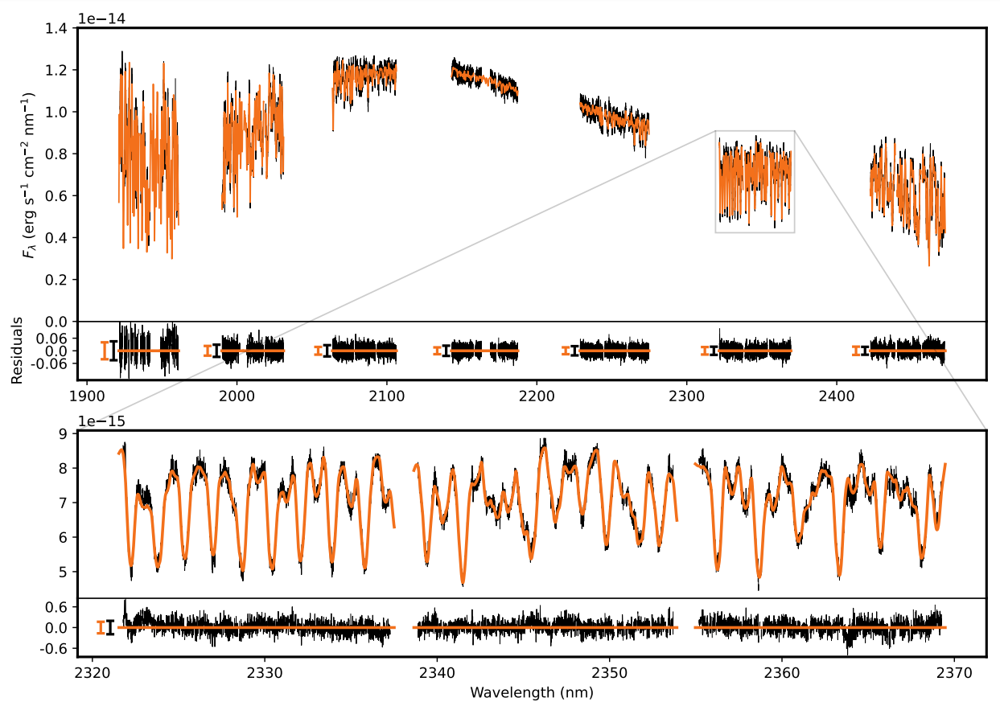

Atmospheric Characterisation of Late L-dwarf with CRIRES+
As the first work in the ESO SupJup Survey, I analysed a CRIRES+ spectrum of the late L-dwarf DENIS J0255-4700. In this ESO large programme, we try to distinguish the formation pathways of isolated brown dwarfs and planetary-mass companions by using formation tracers such as the C/O- or 12C/13C-ratio.
With our K-band spectrum of DENIS J0255-4700, we find the first confident detection of NH3 and tentative evidence for 13CO in this brown dwarf's atmosphere. The isotope ratio suggests a depletion of 13C compared to the interstellar medium, indicating a mature age. We measure an under-abundance of CH4 which confirms that the atmosphere is driven out of a chemical equilibrium.
